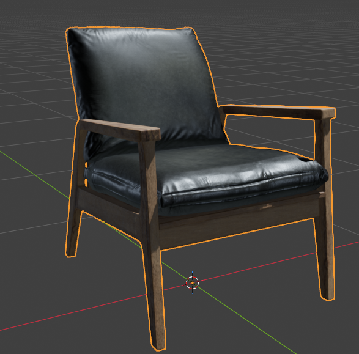

Hoe kunnen we dit doen?
Het idee is eigenlijk: hoe kunnen we een exposure scenario bouwen voor de immersive lab?
Ik heb nagedacht over de mogelijkheden, en om een virtuele omgeving te maken zijn er 3 mogelijkheden:
- 2D afbeeldingen die bewegen
- 3D omgeving
- TouchDesigner
Verschillende visuele vormgeving
2D afbeeldingen
Ik had geprobeerd om met DaVinci Resolve wat 2D animaties te maken. Het leek me cool om een soort parallax-effect te maken zoals in games, maar hier was ik niet goed in, en vond ik het niet leuk. Dus toen was ik gestopt.
TouchDesigner
Van de docent die de immersive room had uitgelegd was TouchDesigner iets wat veel studenten gebruikten om reactiviteit te bouwen. TouchDesigner is een programma waarbij je live beelden genereert. Het is eigenlijk een super cool programma.
Je kan een AI-tracking systeem koppelen aan TouchDesigner en op basis van handsignalen bepaalde effecten triggeren. Het probleem is, er is best wel een diepe learning curve om het te begrijpen.
Omdat mijn team niet super veel interesse lijkt te hebben in het visuele ontwerp gedeelte, leek het het beste om iets te kiezen waarbij ik zelf ook gemotiveerd ben. TouchDesigner is not it.

3D omgeving
Ik heb dit onderzocht en gekeken wat de leukste maar ook meest simpele optie is.
Omdat ik toch gamedev wil leren kan ik Blender downloaden. Ik hoef niet te tekenen en kan kant-en-klare modellen gebruiken.
3D scene maken
Mijn eerste idee was enkel om Blender te gebruiken om video's af te spelen van de immersive environment, om te zien hoe dat er virtueel uit ziet zonder dat we die kamer in hoeven te huren.
Want we kunnen gewoon video's opnemen en de video's projecteren op Blender. Het coole hiervan is, we kunnen simpele 3D-scenario's bouwen met kant-en-klare 3D-modellen, deze direct opnemen in het programma, en zo een omgeving creëren.
Doordat het 3D is krijgt het systeem automatisch een gevoel van diepte. En omdat het video's zijn zou het makkelijker zijn voor de opdrachtgever om te runnen.
Daarnaast, omdat je kan scripten in Blender, kan je een soort van demo-omgeving creëren.
Immersive room nabouwen
De immersive lab heeft een poster voor de deur met de volgende dimensies:

- Front: 1058 × 799px
- Back: 1058 × 799px
- Left: 1361 × 799px
- Right: 1361 × 799px
- Floor: 1058 × 1361px
Ik had geen werkelijke dimensies van de muur in meters, maar gelukkig is dat niet nodig. Het belangrijkste deel is de aspect ratio.
Dus in Blender heb ik de immersive room nagebouwd op basis van de aspect ratio van de pixel formaten. Ik heb gewoon de pixel formaten gedeeld door 100 en dat is de oppervlakte. Dan kwam ik neer op:
- Front: 10.58 × 7.99 meter
- Back: 10.58 × 7.99 meter
- Left: 13.61 × 7.99 meter
- Right: 13.61 × 7.99 meter
Dat komt niet overeen met de werkelijkheid, maar dat is ook niet nodig. Het is enkel een testomgeving. Dus nu hebben we dit in Blender:

Omgeving vinden of bouwen?
Sommige missen textures en zien er daardoor niet goed uit.
Of sommige zien er enkel goed uit vanuit één perspectief.

Zelf modellen zoeken om een ruimte te maken.

Testomgeving creëren voor een video / afbeelding
Van onze opdrachtgever hebben we een video gekregen, maar die zijn 3GB en elke keer faalt de Teams-download...
Op de website van Blender hebben ze prachtige demo-omgevingen gebouwd. Dus ik heb gewoon één van deze omgevingen gedownload zodat ik kan testen.
Blender 4.5 LTS – DOGWALK
blender.org/download/demo-files

De omgeving is cool, maar er is geen lucht aanwezig. Het is een eentonige kleur.
Dus ik heb gezocht naar een skybox. Want ik wil in de video dat het wel voelt alsof je in een ruimte staat met wolken etc.
Ik heb de volgende skybox gebruikt hiervoor: Poly Haven — Pure Skies
Ik heb ook wat extra primitieve vormen toegevoegd zodat de omgeving niet enkel plat land is. Niet super indrukwekkend, maar het helpt om de ruimte wat op te vullen.

Crappy animatie
Kheb een kleine animatie gemaakt en de bestaande animatie wat aangepast zodat er een beetje beweging is, om te kijken hoe de overgang naar muren klopt.

Hoe iets opnemen dan..?
Origineel had ik de camera's met een FOV van 90 graden. Alleen het probleem hierbij is dat het een video opneemt alsof de kamer een doos is.
De immersive room is eigenlijk een rechthoek. De linker en rechter muur zijn breder dan de voor- en achterkant van de kamer. Het probleem is hierbij dat als je een rechthoek opneemt (zoals ik dat had...) dat je op de linker- en rechtermuur een uitgestrekt beeld krijgt omdat je een kleiner beeld op een bredere muur toont.
Je kan zien dat mijn camera's ook in een doospositie stonden:

Ik heb met behulp van AI de camera's FOV berekend. Ik weet niks van camera's af en laat die maar lekker de aspect ratios berekenen.
Voor elke camera heb ik dan de output van de camera (pixel hoogte en breedte) gezet naar de exacte dimensies van de immersive room vlakken.
Van Blender naar Godot
Ik dacht dat het eigenlijk cool zou zijn als je een klein level kan hebben waarin je gewoon letterlijk kan rondkijken.
Dit zou voor de opdrachtgever ook makkelijker te runnen zijn. Godot is super kleinschalig. En met Godot is het makkelijker scripten dan in Blender imo.
Ik ben van plan om nog buttons toe te voegen om special effects uit te testen.

Het is niet perfect, maar het geeft een beetje een idee hoe je van 3D naar geprojecteerde video's kan gaan en hoe dat er dan uit ziet.
Laat ons een klein beetje testen.
Click to reveal spoiler — Immersive room preview